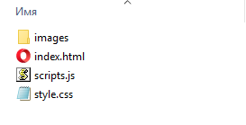

Задания по JavaScript
Задание - создание веб-сайта "Список задач"
Выполненное задание можно посмотреть здесь
Вашей задачей является продемонстрировать свои навыки программирования на “чистом” JavaScript. Для этого вам необходимо написать свое веб-приложение под названием “Список задач”.
В данном модуле вы можете использовать только чистый JavaScript и чистый CSS, без
фреймворков, библиотек и дополнительных модулей.
Все интерактивные действия должны происходить без обновления страницы.
Основной функционал:
- Добавление задачи.
- Название задачи - нельзя добавить задачу с пустым названием.
- Дата и время до которого необходимо выполнить задачу необязательные поля. В случае заполнения: не раньше сегодняшнего дня и текущего времени.
- Отметка о выполнении задачи.
- Удаление задачи.
- Фильтрация.
- Фильтрация должна происходить в момент ввода поискового запроса.
- Фильтрация ведется по заголовку задачи, названиям подзадач, дате и времени.
- Задачи, которые не удовлетворяют поисковому запросу при фильтрации, должны скрываться.
- Редактирование задачи.
- Название задачи - нельзя оставить пустое название.
- Дата и время, до которых необходимо выполнить задачу.
- Вывод задач.
- Вы должны предусмотреть, что в задаче должно выводиться время до выполнения.
- Если время до выполнения вышло, то должно выводиться слово "Просрочено".
Шаг 1: создание всех необходимых директорий и файлов для сайта
Содержимое проекта будет выглядеть так:
В папке images лежат фотографии иконок, поэтому ее создавать необязательно.
Шаг 2: создание разметки для сайта
Открываем файл index.html и пропишем в нем такой код:
<!DOCTYPE html>
<html lang="ru">
<head>
<meta charset="UTF-8">
<meta http-equiv="X-UA-Compatible" content="IE=edge">
<meta name="viewport" content="width=device-width, initial-scale=1.0">
<link rel="stylesheet" href="style.css">
<title>Список задач</title>
</head>
<body>
<header>
<div class="logo">ToDoList</div>
<!-- поле для поиска -->
<input type="search" class="input_search" placeholder="Поиск задачи" onkeyup="searchTasks()">
</header>
<div class="main">
<div class="add_tasks_block">
<label for="input_addTask">Введите название задачи</label>
<!-- поле для названия задачи -->
<input id="input_addTask" class="input_addTask" type="text" placeholder="Введите задачу" required>
<label>Введите дату и время до выполнения (необязательно)</label>
<!-- поля для добавления даты и времени -->
<div class="dataTime">
<input class="input_addTaskDate" type="date" required>
<input class="input_addTaskTime" type="time" required>
</div>
<button class="btn_add">Добавить</button>
</div>
<div class="tasks_block">
<h1>Задачи:</h1>
<!-- в этом блоке будут отображаться задачи -->
<div class="tasks">
</div>
</div>
</div>
<footer>
ToDoList
</footer>
<!-- подключение JavaScript файла, в котором будут храниться скрипты для проекта -->
<script src="scripts.js"></script>
</body>
</html>
Шаг 3: создание стилей для сайта
Открываем файл style.html и пропишем в нем такой код:
header {
display: flex;
flex-wrap: wrap;
justify-content: space-between;
margin: auto;
padding: 15px 10px;
max-width: 1170px;
}
footer {
margin: auto;
padding: 15px 10px;
max-width: 1170px;
}
.logo {
font-size: 30px;
}
h1 {
text-align: left;
width: 95%;
}
input, button {
font-family: Comic Sans MS;
outline: none;
}
label {
padding: 5px 0px;
}
.main {
margin: auto;
padding: 10px;
max-width: 1170px;
}
.add_tasks_block {
padding-top: 50px;
margin: auto;
max-width: 800px;
display: flex;
flex-direction: column;
justify-content: center;
}
.input_addTask {
padding: 7px;
border: 1px solid rgb(156, 154, 154);
}
.dataTime {
display: flex;
justify-content: space-between;
}
.input_addTaskDate {
margin-top: 5px;
padding: 5px;
margin-right: 5px;
border: 1px solid rgb(156, 154, 154);
width: 100%;
}
.input_addTaskTime {
margin-top: 5px;
padding: 5px;
border: 1px solid rgb(156, 154, 154);
width: 100%;
}
.btn_add {
margin-top: 5px;
padding: 8px;
border: none;
background: DarkSlateGray;
color: white;
cursor: pointer;
}
.input_search {
padding: 7px;
border: 1px solid rgb(156, 154, 154);
margin-top: 5px;
}
.tasks_block {
max-width: 800px;
padding-bottom: 50px;
margin: auto;
display: flex;
flex-direction: column;
align-items: center;
flex-wrap: wrap;
}
.tasks {
width: 100%;
}
.tasks_item {
border-bottom: 2px solid lightgray;
position: relative;
padding: 15px 20px;
display: flex;
flex-wrap: wrap;
flex-direction: column;
justify-content: center;
margin: 10px 0px;
}
.tasks_item_title {
display: flex;
flex-wrap: wrap;
}
.task_title {
margin-right: auto;
padding: 5px 0px;
font-weight: 600;
margin-top: 5px;
}
.pars {
margin: 20px 0px;
color: rgb(156, 154, 154);
}
.task_functions {
display: flex;
align-items: center;
margin: 5px 0px;
width: 100%;
justify-content: flex-end;
}
.task_complete {
margin: 5px 10px 0px 0px;
width: 30px;
height: 30px;
cursor: pointer;
}
.task_update {
display: flex;
align-items: center;
justify-content: center;
margin-right: 5px;
width: 30px;
height: 30px;
cursor: pointer;
}
.task_delete {
display: flex;
align-items: center;
justify-content: center;
width: 30px;
height: 30px;
cursor: pointer;
}
.img_up {
width: 20px;
height: 20px;
filter: opacity(0.5);
transition: 0.2s;
}
.img_del {
width: 30px;
height: 30px;
filter: opacity(0.5);
transition: 0.2s;
}
.task_update:hover .img_up {
filter: opacity(1);
}
.task_delete:hover .img_del {
filter: opacity(1);
}
.tasks_item.checked {
background-color: lightgray;
opacity: 0.5;
}
.task_up {
display: flex;
align-items: center;
justify-content: center;
position: fixed;
background: rgba(43, 44, 44, 0.8);
width: 100%;
height: 100%;
z-index: 10;
top: 0;
left: 0;
visibility: hidden;
opacity: 0;
transition: 0.1s;
}
.task_up_block {
visibility: visible;
opacity: 1;
}
.task_up_form {
border-radius: 10px;
display: flex;
flex-direction: column;
margin: 20px 10px;
padding: 0px 20px 20px 20px;
background-color: white;
width: 615px;
position: relative;
}
.span_close {
margin: 5px;
position: absolute;
top: 0;
right: 0;
width: 30px;
height: 30px;
cursor: pointer;
}
.img_close {
width: 30px;
height: 30px;
filter: opacity(0.5);
transition: 0.2s;
}
.span_close:hover .img_close {
filter: opacity(1);
}
.input_upTask {
padding: 7px;
border: 1px solid lightgray;
}
.input_upTaskDate {
margin-top: 5px;
padding: 5px;
border: 1px solid lightgray;
}
.input_upTaskTime {
margin-top: 5px;
padding: 5px;
border: 1px solid lightgray;
}
.btn_up {
margin-top: 5px;
padding: 8px;
border: none;
background: lightgray;
cursor: pointer;
}
.block_msg {
display: inline-block;
position: absolute;
left: 0;
bottom: 0;
margin: 0px 0px 23px 20px;
}
.msg {
font-size: 18px;
font-weight: 600;
color: rgb(219, 30, 30);
}
.dblock {
display: flex;
}
.dnone {
display: none;
}
@media (max-width: 390px) {
.logo {
font-size: 30px;
width: 100%;
}
.input_search {
padding: 7px;
border: 1px solid rgb(156, 154, 154);
margin-top: 5px;
width: 100%;
}
}
Шаг 4: объявление переменных, создание начальных функций и присваиваний
В файле scripts.js пропишем такой код:
const inputAddTask = document.querySelector('.input_addTask');
const inputAddTaskDate = document.querySelector('.input_addTaskDate');
const inputAddTaskTime = document.querySelector('.input_addTaskTime');
const btnAddTask = document.querySelector('.btn_add');
const divTask = document.querySelector('.tasks');
// в поле с датой минимальное значение будет равно текущей дате
inputAddTaskDate.min = `${new Date().getFullYear()}-${('0'+(new Date().getMonth()+1)).slice(-2)}-${('0'+(new Date().getDate())).slice(-2)}`;
// создаем переменную для текущей даты в будущем модальном окне, в котором будем изменять задачу
let ModalDateMin = `${new Date().getFullYear()}-${('0'+(new Date().getMonth()+1)).slice(-2)}-${('0'+(new Date().getDate())).slice(-2)}`;
// создаем хранилище для для задач
let tasks;
// проверка на наличие задач в хранилище
if (!localStorage.tasks) {
tasks = [];
} else {
// если в массиве что-то есть, то получаем его содержимое
tasks = JSON.parse(localStorage.getItem('tasks'));
}
// создаем функцию, где написана структура задачи
function Task(title, dateBeforeCompletion, timeBeforeCompletion) {
this.title = title;
this.completed = false;
this.dateBeforeCompletion = dateBeforeCompletion;
this.timeBeforeCompletion = timeBeforeCompletion;
}
// функция, которая записывает данные в localStorage
const addInLocalStorage = () => {
localStorage.setItem('tasks', JSON.stringify(tasks));
}
// нажимая на кнопку "Добавить" в HTML файле, добавляется задача в localStorage
btnAddTask.addEventListener('click', () => {
if (inputAddTask.value === '' || inputAddTask.value[0] === ' ') {
return;
} else if (inputAddTaskDate.value !== '' && inputAddTaskDate.value < currentDate.split('.').reverse().join('-')) {
alert('Некорректная дата или время');
return;
} else if (inputAddTaskDate.value === currentDate.split('.').reverse().join('-') && inputAddTaskTime.value <= currentTime) {
alert('Некорректная дата или время');
return;
} else if ((inputAddTaskDate.value === '' && inputAddTaskTime.value === '') || (inputAddTaskDate.value !== '' && inputAddTaskTime.value !== '' && inputAddTask.value !== '')) {
tasks.push(new Task(inputAddTask.value, inputAddTaskDate.value.split('-').reverse().join('.'), inputAddTaskTime.value));
inputAddTask.value = '';
inputAddTaskDate.value = '';
inputAddTaskTime.value = '';
addInLocalStorage();
} else {
return;
}
});
Шаг 5: создание разметки для задач и вывод их в HTML-код
В файле scripts.js пропишем такой код:
// функция, которая возвращает разметку задачи
const createTask = (task, index) => {
return `
<div class="tasks_item${task.completed ? ' checked' : ''}">
<div class="tasks_item_title">
<input title="Отметить задачу как выполненную/невыполненную" onclick="completeTask(${index})" class="task_complete" type="checkbox" ${task.completed ? 'checked' : ''}>
<div class="task_title">${task.title}</div>
</div>
${task.dateBeforeCompletion !== "" ? `<div class="pars" par1="${task.dateBeforeCompletion}" par2="${task.timeBeforeCompletion}">Выполнить до:<br>${task.dateBeforeCompletion} / ${task.timeBeforeCompletion}</div>` : ''}
<div class="block_msg${task.completed ? ' dnone' : ''}">
<div class="msg"></div>
</div>
<div class="task_functions">
<div title="Изменить задачу" onclick="openModal(${index})" class="task_update">
<img class="img_up" src="images/pen.svg" alt="">
</div>
<div title="Удалить задачу" onclick="deleteTask(${index})" class="task_delete">
<img class="img_del" src="images/x.svg" alt="">
</div>
</div>
</div>
<div class="task_up">
<div class="task_up_form">
<span class="span_close" onclick="closeModal(${index})">
<img class="img_close" src="images/x.svg" alt="">
</span>
<h3>Изменить задачу</h3>
<input class="input_upTask input_upTask${index}" type="text" value="${task.title}" placeholder="Введите задачу" required>
<input class="input_upTaskDate input_upTaskDate${index}" type="date" min="${ModalDateMin}" value="${task.dateBeforeCompletion.split('.').reverse().join('-')}" required>
<input class="input_upTaskTime input_upTaskTime${index}" type="time" value="${task.timeBeforeCompletion}" required>
<button onclick="updateTask(${index})" class="btn_up">Изменить</button>
</div>
</div>
`
}
// функция, в которой происходит добавление разметки задачи в HTML-код и пересоздание всей этой разметки
const clearAndCreateHTML = () => {
divTask.innerHTML = '';
if (tasks.length > 0) {
tasks.forEach((item, index) => {
divTask.innerHTML = divTask.innerHTML + createTask(item, index);
});
}
}
clearAndCreateHTML();
Также добавим функцию clearAndCreateHTML() в код, где при клике добавляется задача:
btnAddTask.addEventListener('click', () => {
if (inputAddTask.value === '' || inputAddTask.value[0] === ' ') {
return;
} else if (inputAddTaskDate.value !== '' && inputAddTaskDate.value < currentDate.split('.').reverse().join('-')) {
alert('Некорректная дата или время');
return;
} else if (inputAddTaskDate.value === currentDate.split('.').reverse().join('-') && inputAddTaskTime.value <= currentTime) {
alert('Некорректная дата или время');
return;
} else if ((inputAddTaskDate.value === '' && inputAddTaskTime.value === '') || (inputAddTaskDate.value !== '' && inputAddTaskTime.value !== '' && inputAddTask.value !== '')) {
tasks.push(new Task(inputAddTask.value, inputAddTaskDate.value.split('-').reverse().join('.'), inputAddTaskTime.value));
inputAddTask.value = '';
inputAddTaskDate.value = '';
inputAddTaskTime.value = '';
addInLocalStorage();
clearAndCreateHTML(); // вот сюда
} else {
return;
}
});
Шаг 6: выполнение задачи
При клике по чекбоксу в нем появляется галочка,
но в локальном хранилище с задачами параметр completed остается false.
Чтобы значение этого параметра менялось, напишем такую функцию:
const completeTask = (index) => {
// при клике на чекбокс мы меняем значение completed на противоположный
tasks[index].completed = !tasks[index].completed;
addInLocalStorage();
clearAndCreateHTML();
}
Шаг 7: изменение задачи
Чтобы модальное окно для изменения данных адекватно открывалось свое для каждой задачи, создадим отдельный массив для их хранения в нем:
let tasksModals = [];
const clearAndCreateHTML = () => {
divTask.innerHTML = '';
if (tasks.length > 0) {
tasks.forEach((item, index) => {
divTask.innerHTML = divTask.innerHTML + createTask(item, index);
});
tasksModals = document.querySelectorAll('.task_up'); // добавим сюда присваивание модальных окон к массиву
}
}
Затем напишем функции для открытия/закрытия модального окна и изменения данных о задаче:
// открытие модального окна
const openModal = (index) => {
tasksModals[index].classList.add('task_up_block');
}
// закрытие модального окна
const closeModal = (index) => {
tasksModals[index].classList.remove('task_up_block');
}
// функция, в которой происходит изменение данных о задаче
const updateTask = (index) => {
const inputUpTask = document.querySelector(`.input_upTask${index}`);
const inputUpTaskDate = document.querySelector(`.input_upTaskDate${index}`);
const inputUpTaskTime = document.querySelector(`.input_upTaskTime${index}`);
if (inputUpTask.value === '' || inputUpTask.value[0] === ' ') {
return;
} else if (inputUpTaskDate.value !== '' && inputUpTaskDate.value < currentDate.split('.').reverse().join('-')) {
alert('Некорректная дата или время');
return;
} else if (inputUpTaskDate.value === currentDate.split('.').reverse().join('-') && inputUpTaskTime.value <= currentTime) {
alert('Некорректная дата или время');
return;
} else if ((inputUpTaskDate.value === '' && inputUpTaskTime.value === '') || (inputUpTaskDate.value !== '' && inputUpTaskTime.value !== '' && inputUpTask.value !== '')) {
tasks[index].title = inputUpTask.value;
tasks[index].dateBeforeCompletion = inputUpTaskDate.value.split('-').reverse().join('.');
tasks[index].timeBeforeCompletion = inputUpTaskTime.value;
addInLocalStorage();
clearAndCreateHTML();
} else {
return;
}
}
Шаг 8: удаление задачи
Для этого дела напишем такую функцию:
const deleteTask = (index) => {
tasks.splice(index, 1);
addInLocalStorage();
clearAndCreateHTML();
}
Шаг 9: вывод слова "Просрочено" в определенной задаче
Для этого дела напишем такую функцию:
const hasDateTime = () => {
// создадим глобальные переменные, в которых будут храниться текущие дата и время
currentDate = `${('0'+(new Date().getDate())).slice(-2)}.${('0'+(new Date().getMonth()+1)).slice(-2)}.${new Date().getFullYear()}`;
currentTime = `${('0'+(new Date().getHours())).slice(-2)}:${('0'+(new Date().getMinutes())).slice(-2)}:${('0'+(new Date().getSeconds())).slice(-2)}`;
const blocksTasks = document.querySelectorAll('.tasks_item');
blocksTasks.forEach((el) => {
// в функции createTask создается разметка задачи, в которыой есть блок с параметрами добавленной даты и времени
// если этот блок существует, то будет происходить проверка на просрочку задачи
if (el.querySelector('.pars')) {
const pars = el.querySelector('.pars');
const elDate = pars.getAttribute('par1');
const elTime = pars.getAttribute('par2');
// сама проверка на просрочку задачи
if ((currentDate > elDate) || (currentDate === elDate && currentTime > elTime)) {
el.querySelector('.msg').innerHTML = 'Просрочено';
}
}
})
}
// чтобы слово "Просрочено" выводилось без обновления страницы, используется setInterval(), вызывая функция hasDateTime() каждую секунду
setInterval(hasDateTime, 1000);
Добавим вызов функции hasDateTime() в функции completeTask(),
updateTask(), deleteTask() и в функцию добавления задачи в localStorage.
Это нужно для того, чтобы при вызове этих функций hasDateTime() работала не прерываясь.
Шаг 10: фильтрация
Для этого дела напишем такую функцию:
const searchTasks = () => {
const inputSearch = document.querySelector('.input_search');
const blocksTasks = document.querySelectorAll('.tasks_item');
blocksTasks.forEach((el) => {
const elTitle = el.getElementsByClassName('task_title')[0].innerHTML;
if (el.querySelector('.pars')) {
const elPars = el.querySelector('.pars');
const elDate = elPars.getAttribute('par1');
const elTime = elPars.getAttribute('par2');
// создание массива с данными о названии, дате и времени задачи
const elArr = [elTitle, elDate, elTime];
// возвращение отфильтрованного значения по строке поиска
let resultSearch = elArr.filter((elem) => {
return elem.includes(inputSearch.value);
})
// если что-то в массиве есть, то выводим нужные задачи
if (resultSearch.length > 0) {
el.classList.add('dblock');
el.classList.remove('dnone');
}
// иначе скрываем неподходящие задачи
else {
el.classList.add('dnone');
el.classList.remove('dblock');
}
} else {
// если в задаче нет даты и времени, то фильтрация происходит только по названию
let resultSearch = elTitle.includes(inputSearch.value);
if (resultSearch) {
el.classList.add('dblock');
el.classList.remove('dnone');
} else {
el.classList.add('dnone');
el.classList.remove('dblock');
}
}
})
}
Добавим вызов функции searchTasks() в функции completeTask(),
updateTask(), deleteTask() и в функцию добавления задачи в localStorage.
Это нужно для того, чтобы при вызове этих функций searchTasks() работала не прерываясь.